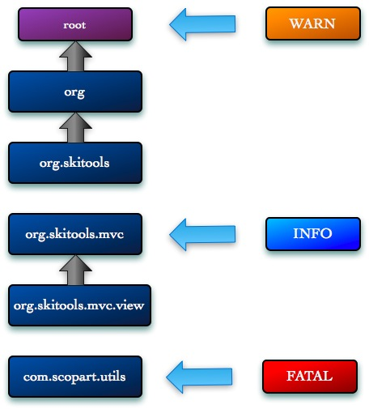

Tutoriel - Logger du framework AS3 Skitools
, Alexis Couronne - [ Code ]Voilà bientôt un an et demi que je développe en AS3 dans un cadre professionnel. Au cour de mon apprentissage sur la technologie Flash, j'ai développé un framework contenant plusieurs outils. Celui-ci répond au doux nom de Skitools et il est hébergé sur un dépôt Mercurial du fabuleux site Bitbucket. Afin d'en faire profiter le plus grand nombre de personnes, j'ai décidé de me lancer dans une série de tutoriels expliquant les différentes briques du framework. Aujourd'hui nous parlerons du Logger. Le logger de Skitools est fortement inspiré du très connu système de journalisation Log4j du monde Java. Tout comme ce dernier, Skitools offre un système hautement configurable, que ce soit au niveau des entrées d'enregistrements que la destination de ces derniers.
Logger
Le logger est l'entité de base du système de journalisation. Il est représenté par la classe org.skitools.logger.Logger.
package
{
import org.skitools.logger.Logger;
public class MaClasse
{
private static var logger : Logger = Logger.getLogger(MaClasse);
}
}
Comme vous pouvez le voir la déclaration d'un logger est très simple. Elle s'éffectue par la méthode statique Logger.getLogger. Celle-ci prend en paramètre le nom de la classe émettrice d'enregistrement. Vous pouvez donner un nom différent mais il est préférable d'utiliser la classe qui sera utilisée par le système de hiérarchie et de configuration.
Les niveaux de journalisation
Tout comme Log4J, Skitools dispose d'une notion de niveau de journalisation. La classe org.skitools.logger.Level permet de définir l'importance du message à journaliser. Lors de la configuration, il est possible de spécifier des filtres pour chaque logger. Ainsi, le message sera journalisé uniquement si le niveau de votre message est supérieur ou égal au niveau du filtre associé à ce même logger. Skitools propose 5 niveaux de journalisation :
- DEBUG - Utilisé pour déboguer l'application
- INFO - Utilisé pour informer l'utilisateur du bon déroulement de l'application
- WARN - Cette avertissement indique une incohérence dans l'application qui peut être liée à un problème de configuration. Des fonctionnements inattendus peuvent surgir.
- ERROR - Indique qu'une erreur s'est produite. Celle-ci n'entraînant pas l'arrêt du fonctionnement de l'application.
- FATAL - Indique qu'une erreur très grave c'est produite. Empêchant ainsi l'application de continuer à fonctionner.
Deux autres niveaux de journalisation existent dans Skitools. Cependant ils ne sont utilisés que lors de la configuration du système :
- OFF - Indique qu'aucun message n'est journalisé.
- ALL - Indique que tous les messages sont journalisés.
Bien-sûr, ces niveaux sont proposés de base dans Skitools, mais rien ne vous empêche de créer les vôtres.
Journalisation d'un message
Pour journaliser un message plusieurs méthodes de l'objet Logger s'offrent à vous :
logger.log(Level.DEBUG, "petit message de débug");
// la même chose via la méthode debug
logger.debug("petit message de débug");
Bien-sûr ces deux fonctionnements sont applicables pour les 4 autres niveaux : INFO, WARN, ERROR, et FATAL. Il est possible de spécifier un objet IFormatter pour un message en particulier. Nous verrons ce que sont les formatters dans la suite de cet article.
Sorties d'écriture du système de journalisation
Nous avons vu comment créer des messages associés à un niveau. Maintenant voyons comment les envoyer vers les différentes sorties d'écritures proposées par Skitools. Ces sorties sont représentées par l'interface org.skitools.logger.layout.ILayout. A ce jour 4 implémentations sont fournies avec Skitools :
- org.skitools.logger.layout.TraceLayout - Les messages sont envoyés vers la méthode trace de Flash. Le plugin FlashTracer de Firefox vous permet de récupérer la sortie en écriture de la fonction trace.
- org.skitools.logger.layout.AirLoggerLayout - Les messages sont envoyés vers l'application Air AirLogger développé par Cédric Néhémie (un ancien collègue de chez Prizee).
- org.skitools.logger.layout.FlashInspectorLayout - Les messages sont envoyés vers l'application Flash FlashInspector développé par Pablo Constantini.
- org.skitools.logger.layout.FireBugLayout - Les messages sont envoyés vers l'incontournable plugin FireBug de Firefox. Bien entendu votre SWF doit être lu via le navigateur pour que les messages apparaissent dans le module "Console" du plugin.
Nous verrons dans la suite de l'article la mise en place de ces différents layouts.
Mise en forme des messages
Skitools permet de formater les messages de journalisation. Cette action se réalise avant leur envoi vers un layout. La mise en forme des messages se fait par les classes implémentant l'interface org.skitools.logger.formatter.IFormatter. Ces objets sont associés aux layouts. Skitools vous propose 2 formatters :
- org.skitools.logger.formatter.SimpleFormatter - Un formatter très simple : il passe au layout le corps du message tel qui l'est. Ce formatter est utilisé par défaut par tous les layouts.
- org.skitools.logger.formatter.PatternFormatter - Ce formatter est plus avancé dans son fonctionnement. Celui-ci prend en paramètre de son constructeur un pattern (sous forme de String) qui va définir la forme que va prendre le message une fois envoyé au layout.
Exemple pour le pattern %L [%C] %M
var logger : Logger = Logger.getLogger("root");
logger.debug("Message A");
logger.warn("Message B");
résultat :
DEBUG [root] Message A
WARN [root] Message B
Tableau récapitulatif des balises :
| Balise | Résultat |
|---|---|
| %C | Le nom du logger émetteur du message |
| %D | La date d'émission du message. Cette balise est un peu particulière car elle accepte une option : %D{dd/MM/yyyy - HH:mm:ss} Cette option permet de spécifier comme la date sera affichée. Cette option est analysée à l'aide la classe org.skitools.utils.DateFormatter je vous conseille donc de jeter un coup d'oeil à la documentation de cette dernière |
| %L | Le niveau du message |
| %M | Le corps du message |
L'héritage des niveaux
Dans Skitools chaque Logger hérite du Level de son parent à moins bien sur qu'on lui est explicitement spécifié un Level. Seul le logger "root", défini par le système, ne possède pas de parent. Ce qui induit que par défaut tous les logger héritent du Level du "root". Prenons l'exemple suivant :

Dans cet exemple nous spécifions que root à le niveau WARN. Ses héritiers (org et org.skitools) héritent tous de ce même level. En spécifiant que org.skitools.mvc à un niveau d'INFO on casse la chaîne d'héritage, donc lui et ses héritiers (org.skitools.mvc.view) auront le niveau INFO. com.scopart.utils devrait par défaut avoir le niveau WARN (héritage de root), mais comme pour org.skitools.mvc on casse la chaîne d'héritage en spécifiant FATAL comme niveau. Si com.scopart.utils a un jour des enfants, ils hériteront donc de ce même niveau.
Voyons maintenant ce qui se passe si par exemple le logger org.skitools émet un message :
- Les messages DEBUG et INFO ne seront pas journalisés car ils possèdent un niveau inférieur à celui spécifié dans org.skitools (WARN).
- Les messages WARN, ERROR et FATAL seront journalisés car ils sont supérieur ou égal à celui spécifié dans org.skitools.
Configuration du système de journalisation
Voici un petit exemple de configuration du système de journalisation de Skitools :
package com.scopart
{
import org.skitools.logger.Level;
import org.skitools.logger.Logger;
import org.skitools.logger.Logging;
import org.skitools.logger.formatter.PatternFormatter;
import org.skitools.logger.layout.FirebugLayout;
import org.skitools.logger.layout.TraceLayout;
import flash.display.Sprite;
public class MaClasse extends Sprite
{
private static var logger : Logger = Logger.getLogger(MaClasse);
public function MaClasse()
{
var logging : Logging = Logging.getInstance();
// enregistrement d'un TraceLayout dans le système.
// Il utilisera par défaut org.skitools.logger.formatter.SimplementFormatter
logging.addLayout(new TraceLayout());
// enregistrement d'un FirebugLayout dans le système.
// Il utilisera un PatternFormatter pour mettre en forme les messages
logging.addLayout(new FirebugLayout(new PatternFormatter("%L [%C] %M")));
// on spécifie un level pour le logger MaClasse
Logger.getLogger(MaClasse).setLevel(Level.ERROR);
// ce message ne sera journalisé car inférieur
// à ERROR spécifié dans le Logger
logger.debug("message 1");
// les deux messages suivant seront journalisé
// car supérieur ou égal à ERROR
logger.error("message 2");
logger.fatal("message 3");
}
}
}
Conclusion
Ce tutoriel touche à sa fin, j'espère qu'il vous aura permis de mieux appréhender le système de journalisation proposé par Skitools. Un tutoriel sur la partie MVC devrait voir le jour d'ici peu. Si vous avez des corrections ou suggestions concernant cet article ou le framework Skitools, merci de me les faire parvenir en commentaire.